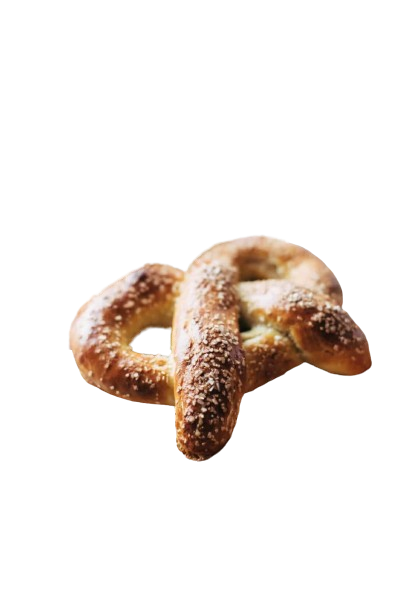

Pretzels

Description
Basic Soft Pretzels necessary dippers for your beer cheese soup ♡
Soft, excessively fluffy, basic, and delicious.
These are the BEST.
Ingredients
- 1 Cup warm milk
- 1 Package instant yeast
- 3 Tablespoons brown sugar
- 2 Tablespoons melted butter
- 1 Teaspoon salt
- 2 1/4 Cups all-purpose flour
Steps
- Make the Dough: In a mixing bowl, gently whisk the warm milk, yeast, brown sugar, butter, and salt. Stir in the flour until a dough forms. Transfer the dough to a floured surface and knead 10-15 times.
- Let the Dough Hang Out: Return to the bowl and drizzle with a little oil to prevent sticking. Cover with a cloth or plastic wrap and set aside for an hour to rise.
- Pretzel-ify: When the dough has risen, punch it back down and divide it into 6-8 sections. Roll each section into a loooong skinny rope. Fold it into a pretzel. Dip into the baking soda solution and place on a parchment-lined baking sheet.
- Bake: Brush with the beaten egg and sprinkle with salt. Bake at 450 degrees for 10-12 minutes, until golden brown. YUUUUUM! Dip in cheese sauce, mustard, or my personal favorite beer cheese soup.
Home